The alarm is a prospective rolling-burden rule on behavioural topic probabilities from LDA / DCABP.
At each decision time (t):
Only decisions with enough history (full W) and enough follow-up to score the label (or a known PD time) are kept. Those eligible ((patient, t)) pairs are the decision points.
| Parameter | Role | Typical choices |
|---|---|---|
| W (lookback) | How much past burden is summarised at (t) | 60 / 90 / 120 days (≈ 2 / 3 / 4 months) |
| H (horizon) | How far ahead PD counts as a hit | 90 / 120 / 180 days (≈ 3 / 4 / 6 months) |
| Granularity | How often decisions are made and how LDA is built | daily, weekly, biweekly, monthly |
| Score family | How pUF / burden are constructed | sampled vs collapsed (below) |
| θ (threshold) | Alarm cutoff on the burden scale | Fixed operating point (θ = 1.60 on monthly sum scale), or Youden for other constructions |
| Event / censor time | Clock used to stop landmarks and label PD | user clock BBDD (fecha_fin − fecha_inicio) |
| Family | Idea |
|---|---|
| Sampled | Daily sliding LDA (30-day window) → daily pUF; weekly / biweekly / monthly only change when you decide (same underlying daily signal). Burden = rolling mean over the last W days. |
| Collapsed | One LDA per non-overlapping block (7 / 14 / 30 d) → block pUF; burden = rolling mean over the last round(W/block) blocks. |
Collapsed block pUF is not the mean of daily pUF inside the block: each family is its own LDA construction.
On the monthly scale, month (m) is placed at day (t = m \times 30). A landmark is kept only if (t) is strictly before the event/censor time. Burden is the sum of pUF over the last W months (so thresholds are on a sum scale, θ = 1.60, not the mean scale ~0.53 used elsewhere).
We fix a main operating region and then sweep the knobs above:
t_evento = fecha_fin − fecha_inicio) as event/censor clock, fixed θ = 1.60. Outputs live under results/alarm/ (tables/, figures/, analysis_figures/, runs/Evento_DB1_clock/). Primary monthly landmarks: runs/Evento_DB1_clock/paper_W3_H4/decision_points_W3_H4.csv (clock BBDD, n=1016).
Delivery summary figures (high-res, clock-aligned, AUROC with patient-bootstrap CIs): analysis_figures/.
Score = sum of pUF over W months; cutoff: month × 30 < t_evento (clock BBDD).
n = 1016 decision points · 116 patients · 156 positives.
| Metric | Value |
|---|---|
| ROC-AUC | 0.700 |
| Sens / Spec (θ≈1.60, sum scale) | 0.673 / 0.616 |
| PPV / NPV | 0.241 / 0.912 |
| TP / FN / FP / TN | 105 / 51 / 330 / 530 |
Threshold scale (same rule, two writings):
| Scale | θ | Relation |
|---|---|---|
| Sum (as used here) | 1.60 | sum of last W=3 monthly pUF |
| Mean (equivalent) | ≈ 0.533 | 1.60 / 3 |
Operating point used throughout (baseline metrics + trajectories): θ = 1.60 (sum scale).
AUROC describes the whole ROC and does not pick a threshold. A pure Youden cut on this clock (~1.06) over-alarms (sens≈0.88 / spec≈0.45) and is not used. Final clinical θ to be confirmed.
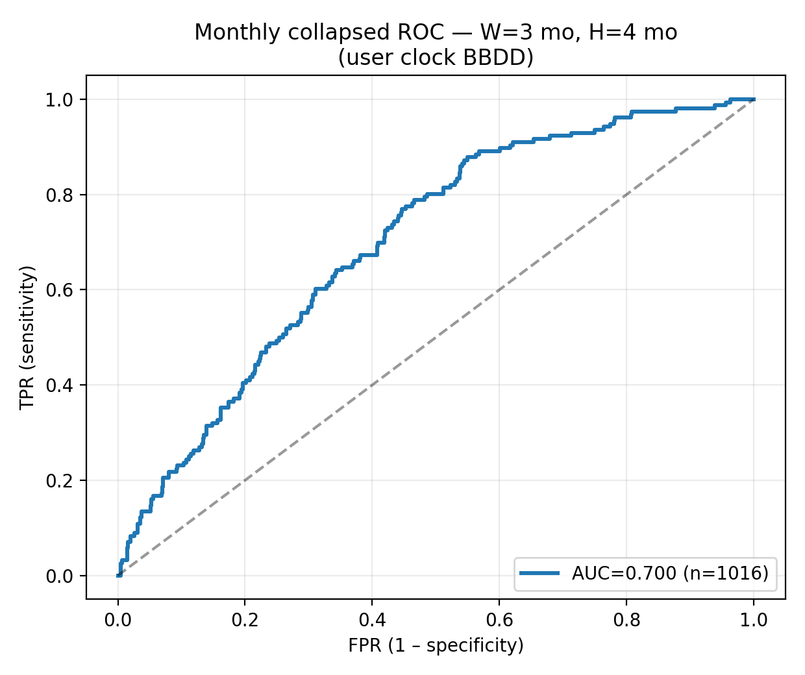
Monthly collapsed row: manuscript θ=1.60 (same as §4). Other rows: construction-wise Youden on their own score scale (for a single comparable operating point per row — not the clinical cut-off of the paper).
Clinical clock: all rows use clock_bbdd.xlsx (t_evento = fecha_fin − fecha_inicio).
AUROC uncertainty: 95% CIs from patient-clustered bootstrap (2000 reps). See analysis_figures/auc_ci_W90_H120.csv.
| Granularity | n | AUC | 95% CI | Sens | Spec | PPV | NPV |
|---|---|---|---|---|---|---|---|
| daily (sampled) | 36495 | 0.683 | 0.610–0.749 | 0.845 | 0.437 | 0.207 | 0.942 |
| weekly sampled | 5262 | 0.682 | 0.613–0.753 | 0.845 | 0.437 | 0.206 | 0.942 |
| biweekly sampled | 2664 | 0.678 | 0.608–0.749 | 0.824 | 0.456 | 0.205 | 0.939 |
| monthly sampled | 1283 | 0.679 | 0.612–0.749 | 0.816 | 0.475 | 0.208 | 0.939 |
| weekly collapsed | 4137 | 0.700 | 0.620–0.773 | 0.734 | 0.590 | 0.242 | 0.925 |
| biweekly collapsed | 2130 | 0.697 | 0.620–0.769 | 0.781 | 0.537 | 0.245 | 0.928 |
| monthly collapsed (30 d) | 1016 | 0.700 | 0.623–0.770 | 0.673 | 0.616 | 0.241 | 0.912 |
Short read
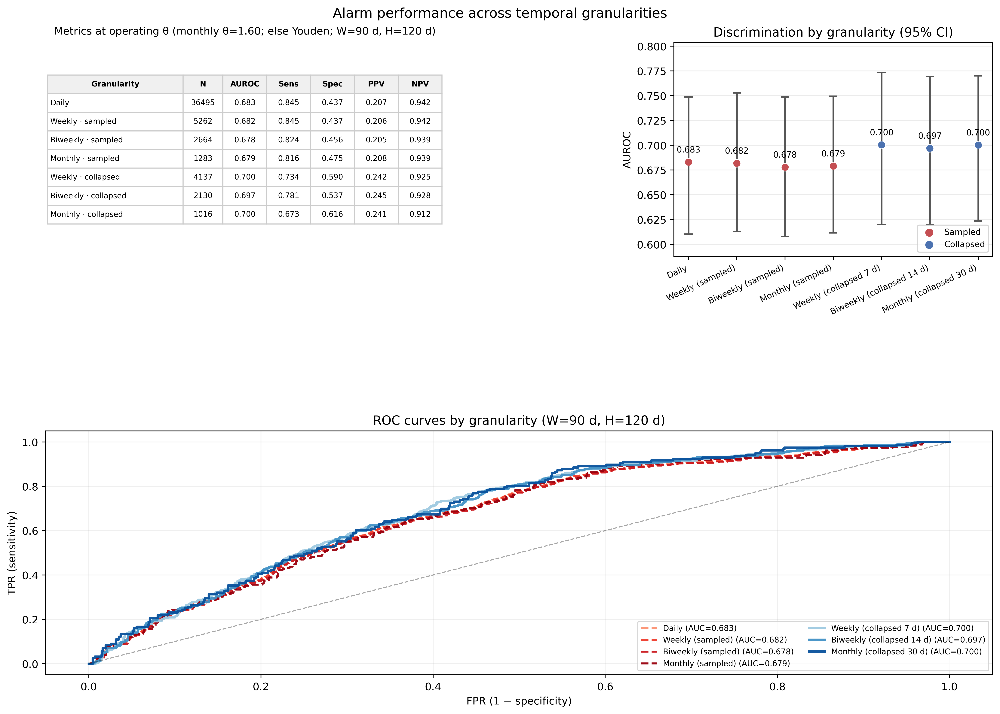
Grid: W ∈ {60, 90, 120} d × H ∈ {90, 120, 180} d.
| H=90 | H=120 | H=180 | |
|---|---|---|---|
| Daily W=60/90/120 | 0.664 / 0.672 / 0.680 | 0.673 / 0.683 / 0.691 | 0.704 / 0.711 / 0.715 |
| Weekly collapsed | 0.676 / 0.693 / 0.702 | 0.685 / 0.700 / 0.711 | 0.711 / 0.725 / 0.732 |
| Monthly collapsed | 0.673 / 0.692 / 0.699 | 0.680 / 0.700 / 0.710 | 0.706 / 0.728 / 0.736 |
Read
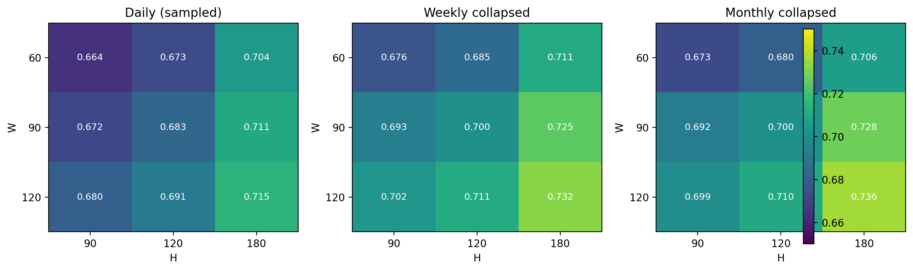
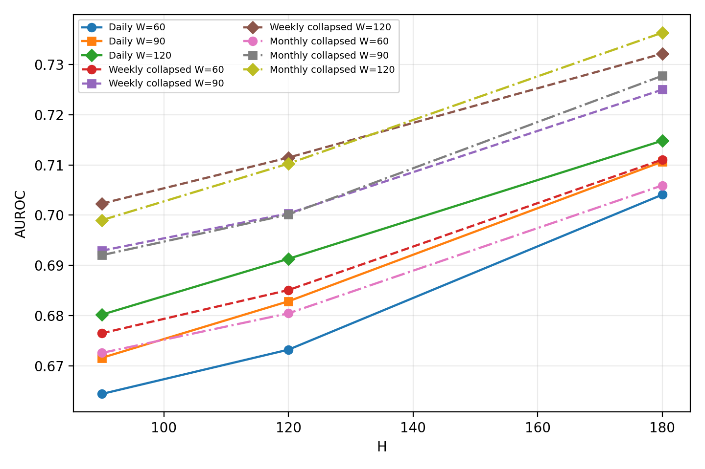
Table: runs/Evento_DB1_clock/granularity/granularity_sweep_summary.csv
Patients: 62004, 23003, 31002, 41006.
| ID | Profile | Notes |
|---|---|---|
| 62004 | PD (day 317) | 1st alarm ~month 9 (lead before PD) |
| 23003 | PD (day 209) | 1st alarm ~month 3 (lead before PD) |
| 31002 | No PD | 1st alarm ~month 21 with no event in follow-up |
| 41006 | No PD | Below threshold; no alarm |
W=3 months, H=4 months, θ=1.60 (sum scale; mean-scale θ/W≈0.533).
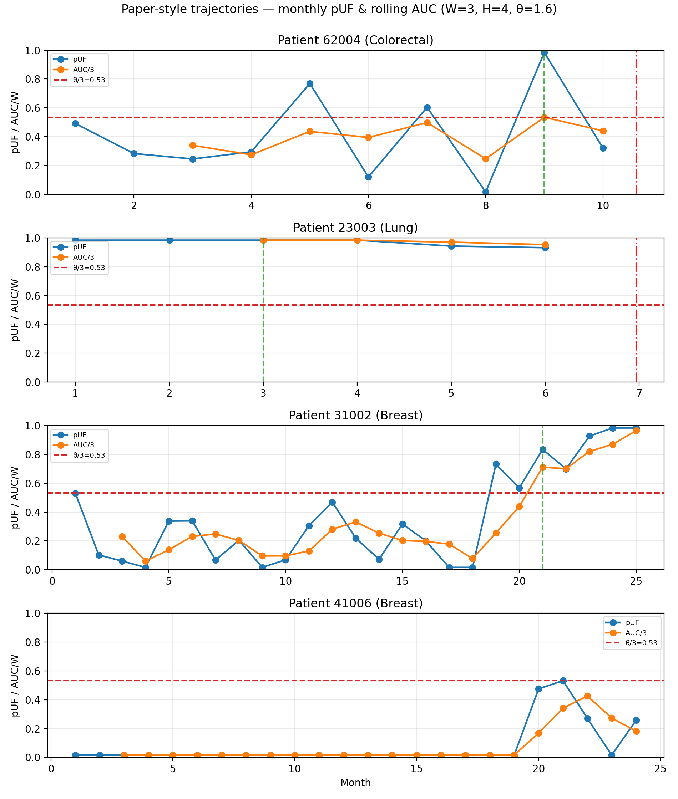
Simplified high-res delivery plots (daily/sampled burden vs monthly collapsed; clock BBDD; manuscript-aligned θ labelled):
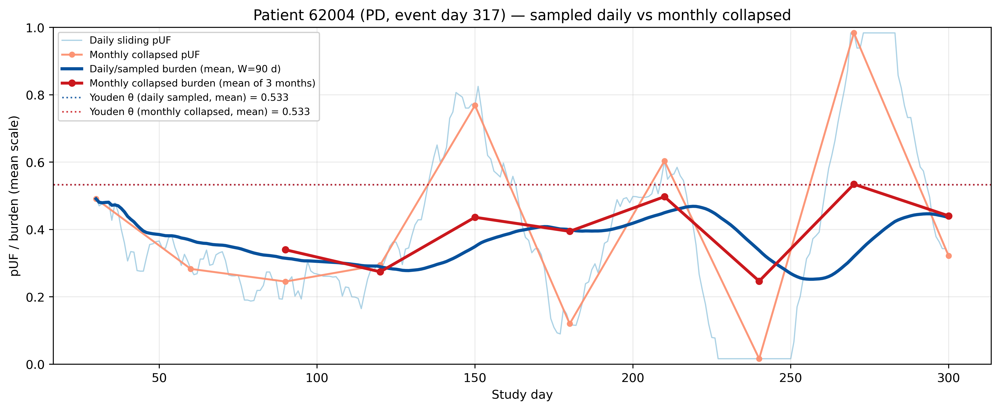
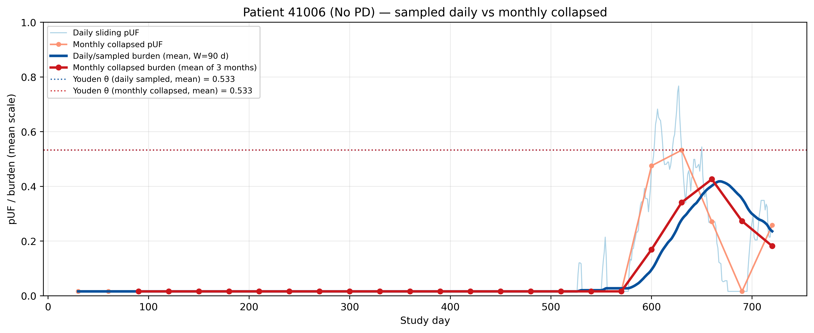
Full multi-panel trajectories:
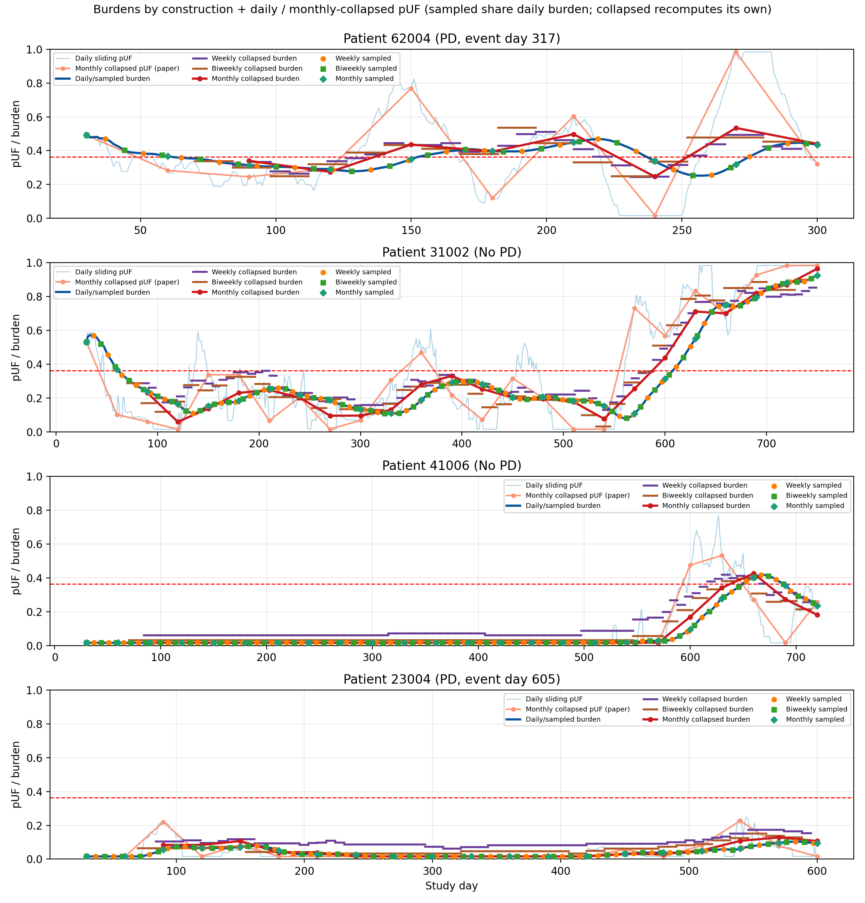
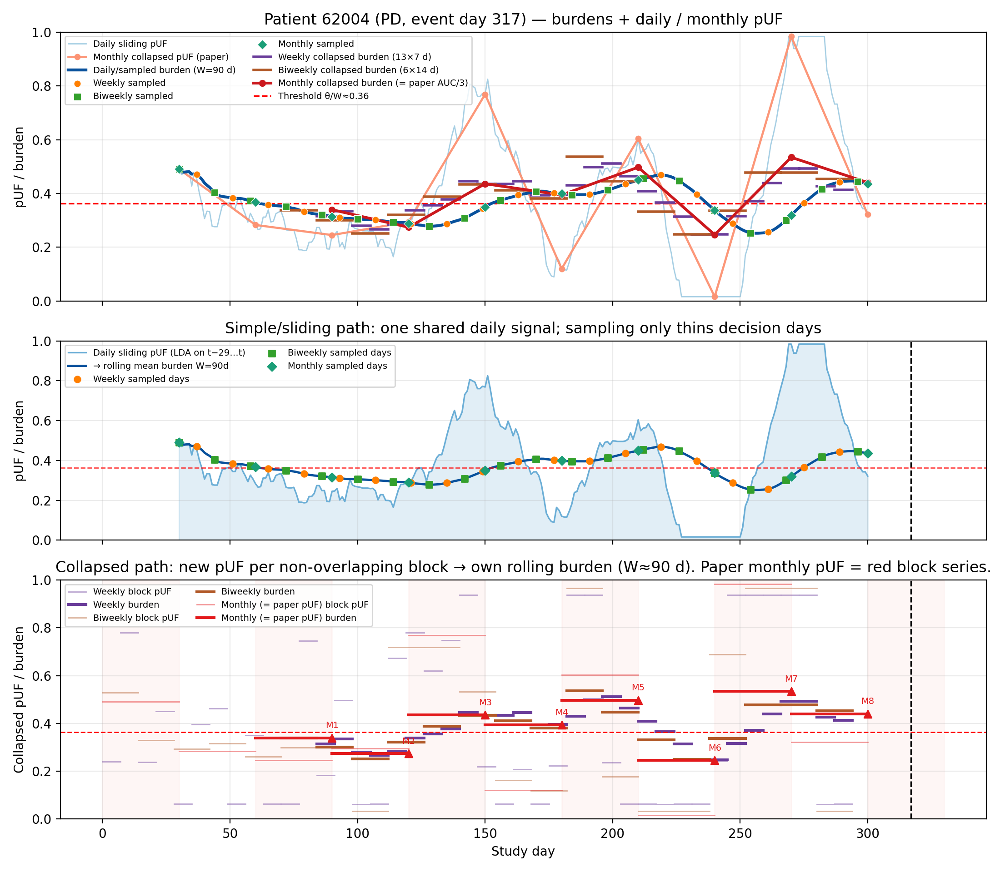
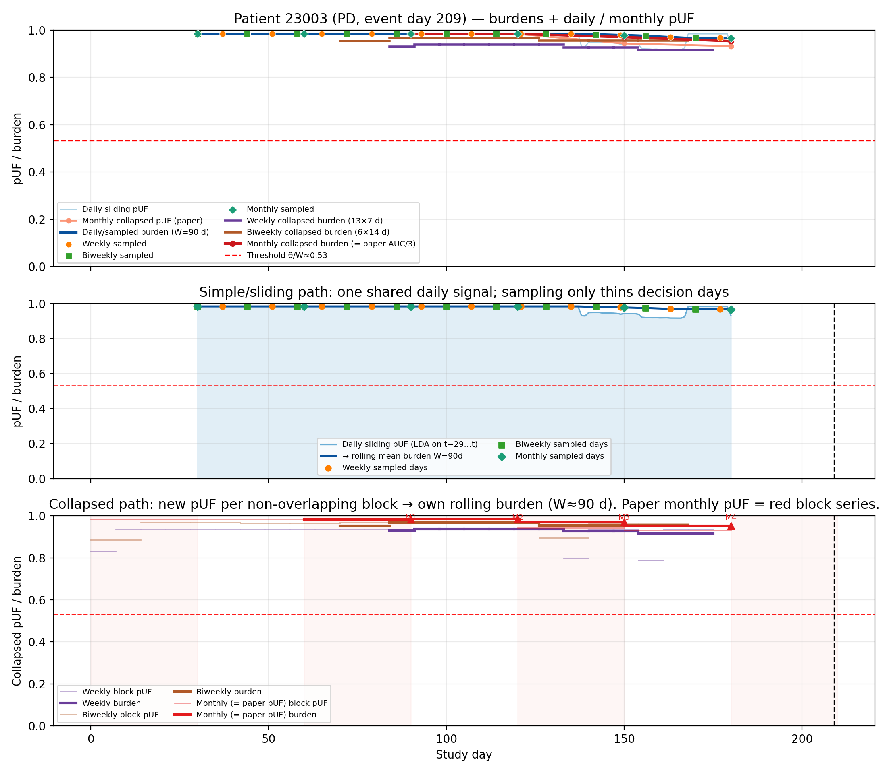
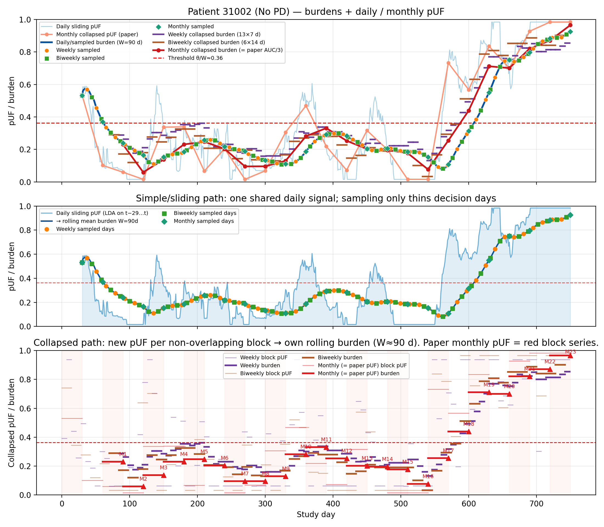
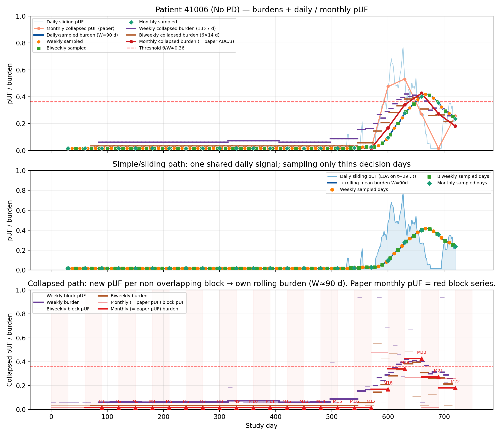
# Paper baseline + granularity (user clock BBDD)
python scripts/03_analysis/alarm/run_alarm_pipeline.py \
--clock data/revision/clock_bbdd.xlsx --run-id Evento_DB1_clock \
--with-granularity --skip-lda
# Monthly / granularity trajectories (θ=1.60)
python scripts/03_analysis/alarm/plot_patient_trajectories.py \
--patients 62004,23003,31002,41006 --clock data/revision/clock_bbdd.xlsx
python scripts/03_analysis/alarm/plot_granularity_trajectories.py \
--patients 62004,23003,31002,41006 --W 90 --clock data/revision/clock_bbdd.xlsx
# High-res delivery figures (clock-aligned; AUROC patient-bootstrap CIs)
python scripts/03_analysis/alarm/plot_analysis_figures.py \
--clock data/revision/clock_bbdd.xlsx --n-boot 2000
# This report (main-branch markdown layout)
python scripts/03_analysis/alarm/write_granularity_report.py --run-id Evento_DB1_clock
File map: README.md. Delivery panel: analysis_figures/.
Generated 2026-10-21 · run Evento_DB1_clock · clock data/revision/clock_bbdd.xlsx
Generated 2026-10-21